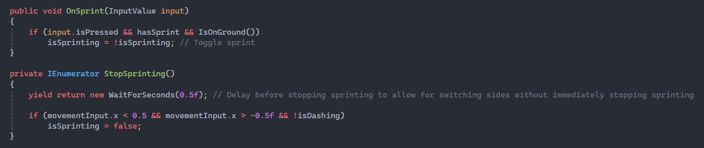
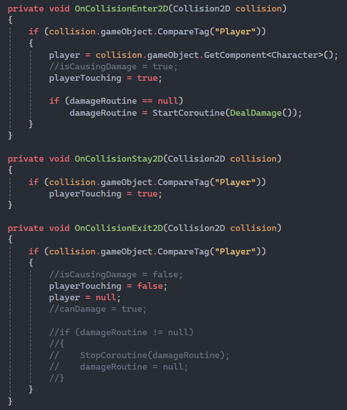
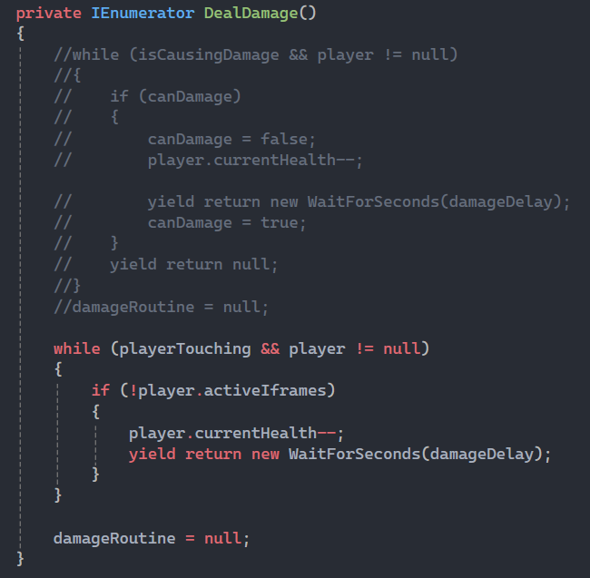
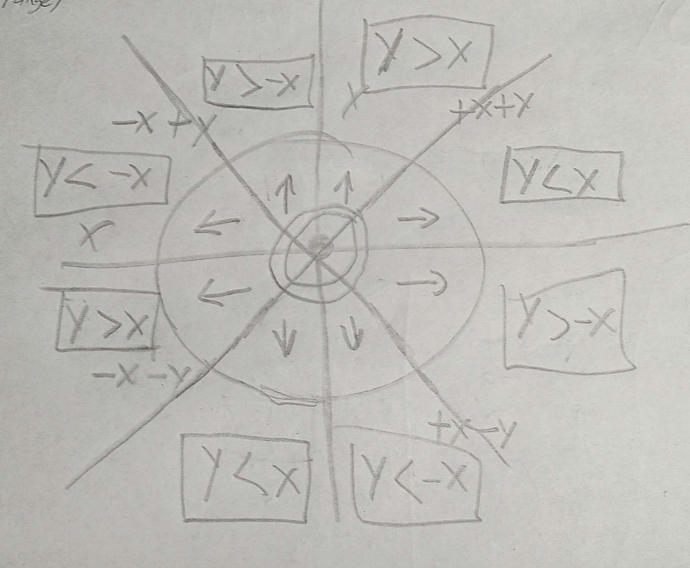
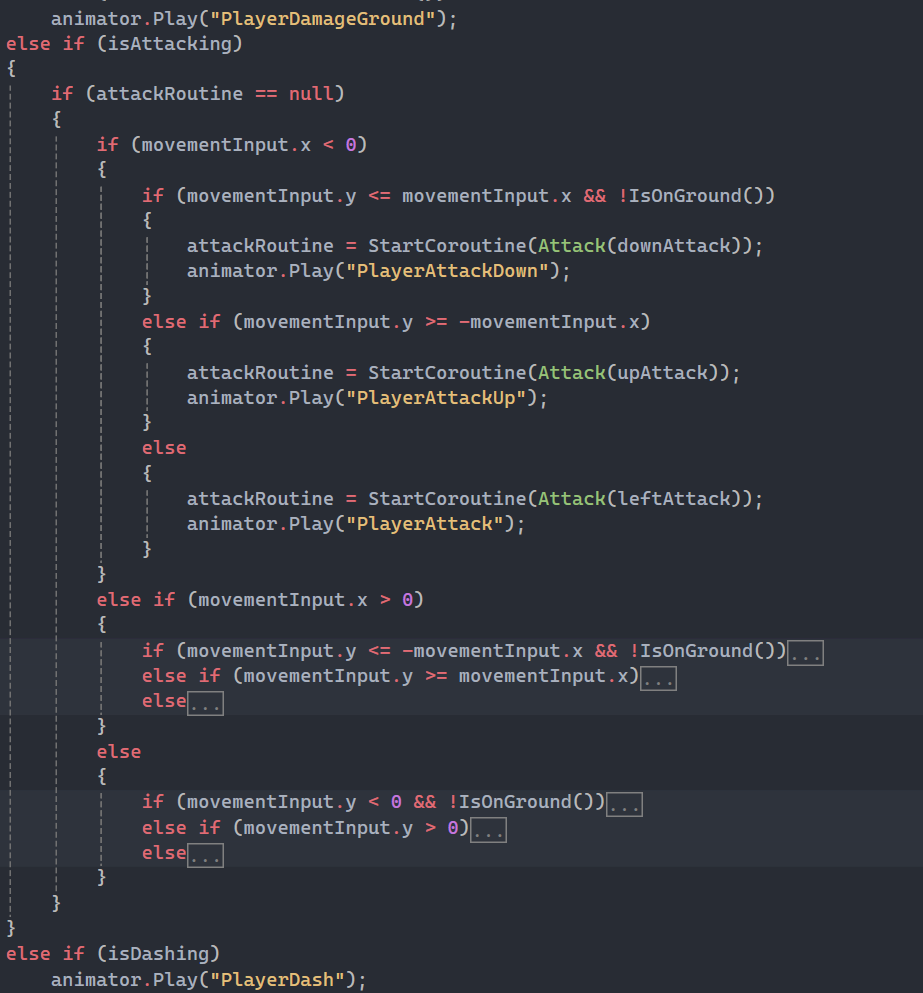
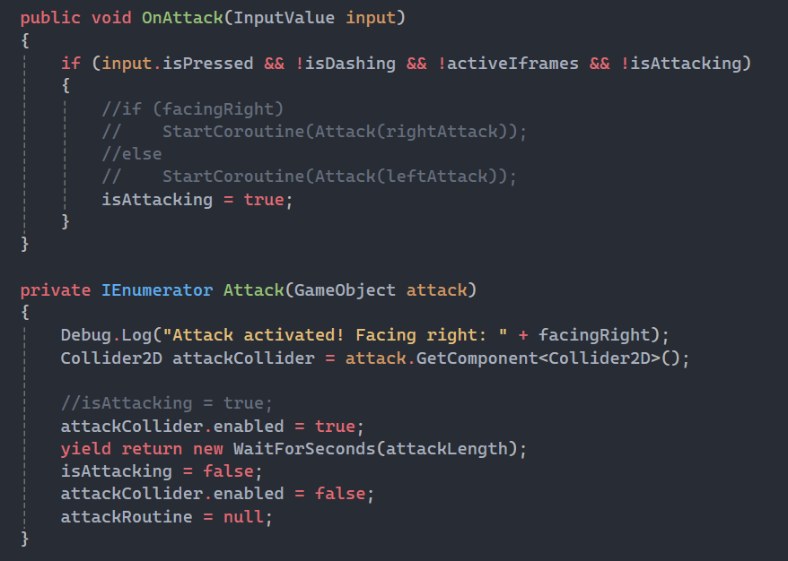

The Concept
Crimson Tomb is a love-letter to the classic Castlevania games, with a slightly more modern twist.
Taking inspiration from the older Castlevania games, like Castlevania: The Adventure on the gameboy and its sequel, in the way that it structures the games in several different castles before being able to progress to Dracula's castle,
this game takes place across five dungeons, with the final boss being in the fifth and final dungeon. The key difference here though, is that this game has rewards at the end of each one, being able to unlock new abilities after completing it.
This game allows players to go through dungeons in whatever order they please. This seems like it would make the abilities redundant, however each dungeon will have several paths.
This allows players to get the abilities in one dungeon, and use them to take shortcuts in another one, letting the player able to decide whether they want to take a shortcut, or fight the boss at the end of each section.
Story Synopsis
A long time ago, there was a powerful Presence whose blood was used to heal wounds, prolong life and raise the dead.
The rulers of a kingdom built a city over its tomb and divided its body into four sacred sanctums. They used the blood of The Presence, which turned them all into monsters over centuries of use.
Centuries later, after the residents have become unable to sustain the seals themselves, the seals weaken and the protagonist, an Executioner of the Old Rites, was sent to destroy the seals, execute The Presence, and free the city from its eternal suffering.
Week 1
I spent most of the first week working on the player and all their abilities, as well as three different enemy types.
The player and the enemies all inherit from a parent Creature class, which has the basic stats such as health and damage etc. as well as some checks for if they are on the ground and the like.
It does hold a few things the player doesn't need, like a method to find the player, which upon looking back should have been in a subclass of the Creature class of its own called Enemy which the different enemy types should inherit from.
The enemies didn't have much interesting code as their logic is quite simple but effective, the fun parts come from the player.
I added knockback and I-frames similar to the original Castlevania games, and it was quite fun to implement.
A small challenge I faced here was the fact my player script had overwritten the knockback if the player held any horizontal input.
I had it written so that it stops any horizontal movement if there is no horizontal input so that the player doesn't just slide around the floor.

When implementing the sprinting ability I decided toggle sprint would be easier for the player, as this game is targeted for PC so holding down shift to could get pretty exhausting after a while.
When stopping movement I also decided to stop sprinting, however it could get pretty annoying to switch directions and have to start sprinting again manually,
so a fun solution I found was to start a coroutine to wait half a second, and then check if the player was moving, turning it off if there was nothing.

I initially faced an issue with the player sticking to walls if there was movement towards the wall, but it was an easy fix by adding a material to the player where the friction was set to zero. This gave me the idea to change the friction of the material when trying to wall slide, but that gave an incosistent fall speed due to the fact the player would have different velocities depending on how early or late into a jump or fall they were, so the solution came down to a few lines of code. I just set the vertical velocity of the player to a set amount if they were intending to wall slide. While adding the wall slide I had to check if the player was facing the wall to turn them around, so that added a new check, but then the player would add input to stay in the wall slide instead of just falling, so I added another check to see if the player's back is touching the wall. The wall check ended up being used in the walker enemy so it would turn around if it touched a wall so it stopped running in place.

The player and enemy collision was a fun challenge. Getting them to interact and deal damage was no issue, the issue arrived when I wanted the player to take damage when touching an enemy, but not collide with their hitboxes, as that would become a problem if they were surrounded by enemies and just collided with them and ended up stuck on top of them. I tried changing the enemy hitbox to a trigger, but of course they just ended up falling through the floor. The solution was a Unity feature I wasn't aware of until now, involving layers.
Layers in Unity can allow users to select which objects can interact with eachother, and can be toggled in the collision matrix available in the project settings. This intially created a new issue, the enemies couldnt actually deal damage to the player and vice versa, as toggling off layer interaction disabled every kind of interaction, uncluding scripts. The solution was to make an empty child of the enemy with a trigger hitbox, making it the same size as the parent, and making a new script just to handle damage when interacting with the player, and changing the tag on it back to default as making a child makes in instantly inherit the parents layer and tag.

Week 2
The tasks for week 2 were just sprite creation of the player and enemies and level design, of course I needed sprites for the level so I made a simple tilesheet consisting of five tiles. My work on the sprites started the week prior, as I had finished it all early.
The player prite was just a simple trace over Trevor from Castlevania III, as well as the enemies all being traced from the same game. All the traces were made only of their silhouettes, with the features and colours being figured out myself.
On the other hand, all the tiles are completely original. I wanted to keep the style similar to the series as it is what inspired this game the most.
The rest of the week was spent in Unity, where I animated all the characters, and made the central hub and the tutorial leading up to it.
The tutorial consists of two parts, the first teaching the player the controls for movement and attacking, where the second part was a short parkour section while introducing the other enemy types.
The hub is where the player will be able to exit to all the available dungeons which are not yet implemented at the moment.
There was little code written this week, but I did make it possible for the player to move to another area by loading a new scene, which will later have a transition made. There were also slight tweaks to stats like speed and jump height for the player.
Week 3
Week 3 was similar to week 2, I made a new set of tiles for the new area in the game known as the Sepulchre Spires, and made a level based around it. The level was mostly vertical as I thought it would be a fun level to both play and develop.
I made a few shortcuts if players have the dash or wall slide abilities.
I made a follow player script which is used for the background and camera objects. I could have made the background a child of the player and made it move along with that object, but the camera isn't updated when moving to a new scene.
I thought it would be simpler to just make a script to follow the player and add it to the camera as well as the background as it makes the player object less crowded with child objects it doesn't need.
Week4
This week was slightly different from the previous one. It started with the usual new tilesheet for the area, but I also made reskins for the enemies to better suit the area.
As the Ashen Causeway was themed around a burning area, I decided it would be interesting to incorporate a tile which does damage to the player over the course of them staying on it. I had a small issue while trying to implement these damage tiles,
sometimes the player would take damage too quickly, which was due to a few different reasons. Initially, I didn't know that due to it being on a tilemap collider, each tile would have its own hitbox, and would deal damage too quickly.
To counteract that issue I added a 1 second timer in between damage ticks using a coroutine, I stopped the coroutine every time the player left the collison, but due to the miniscule bumps in tilemaps,
the character would hop slightly up and down and lose all health within a second or two. The way I fixed this is by making a coroutine variable in the class, and setting it to null after the loop in the coroutine,
once the player stops touching the tiles, as well as adding an OnCollisionStay2D just as an extra precaution.


Week 5
Most of the same tasks followed into week 5, I made a new set of tiles, enemies, and then created the map for the area in Unity.
The Bloody Canals levels were fun to design, as my idea for the area was a maze-like, blood covered sewer system, which occasionally featured wall climbing and double jumping to progress, and sometimes to just lead into a dead end to add to the maze like feel.
Outside of the usual level design, I made a small change to the player. The previous hitbox used a capsule collider, which I changed into a box collider with rounded edges.
This was a needed change because sometimes it felt like the player fell off edges too easily, rounding off the edges was necessary because otherwise the hitbox would get stuck colliding with the tilemap, which is why it was a capsule collider to begin with.
Week 6
Week 6 was a challenging one. Although it was still just level design and sprite creation, there was something about these levels that just didn't click for me. The tileset was actually fun to create, the issue was the level design itself. The levels were exactly as I had imagined them in my head before starting, but they were too bland with nothing going on which made it not just boring to make, but also will probably be the least fun to play. The way I combated the plain levels was by adding sections where the player would run into a hallway of enemies with platforms above where jumping enemies would spawn from. This was the first level where there was no new sprites for the enemies, and where I made a second set of tiles for the floor and background because I felt like it would add to the atmosphere of the level.
Week 7
This was the last week dedicated to level design, with the final level being the final area in the game.
With this being the final area, it needed to be special. I tried to utilise as many of the previous areas as a base for how this level should be made, but that ended up being more difficult than I had thought it would be.
The reason for that was simply that the previous levels weren't necessarily complex, but worked in their own contexts using themes for each area. Because of that, just reusing the same ideas with a smaller tile palette wouldn't work that well,
but using the old tiles wouldn't work for this area either.
Eventually the level ended up fine, and it also utilised some of the abilities the player got from the previous dungeons.
Week 8
Starting off the first week of not just making levels, I decided to touch up the player with some final major additions. The first thing I did was edit the way the player moves.
Attacking while holding down a directional input used to make the player slide around slightly, which felt very unpolished. I fixed by adding an if statement around the movement logic to make sure it only fires when the player isn't attacking.
The next thing I tackled was finally adding the vertical attacks. Adding vertical attacks was an interesting challenge, because I want the game to include controller support, I couldnt just make it so that if the player is holding up or down to trigger them.
My solution to this issue was actually very fun for me to figure out, and had to do with which of the x and y values was larger.

Translating this to code was all actually mostly done where the animation logic was for the player. I first checked the horizontal input, then checked the logic for whether the player should attack down, up, or straight ahead. I then repeated the same logic for the other horizontal direction and then no inputed directions. Doing this meant I had to make a coroutine variable, where I handle how long the attack hitbox stays up, this was so that quickly changing directions doesn't allow the player to quickly spam attacks over and over.


The down attacks also make the player hop sligtly allowing the player to pogo on top of enemies. Allowing players to pogo is actually the reason why I decided to add vertical attacks now, as I was unsure about adding them before, but it allows the player to jump over bosses, which are going to be bigger than the regular enemies, and with a few of the things I have in mind for some of them is the reason I ultimately decided it was going to be a key feature. Speaking of bosses, that is the next thing I started working on. I made a few animations for a handful of bosses, though some still need to be completed. This time, none of the sprites were traced, including the new vertical attacks for the player.
Week 9
Week 9 continued on making sprites for the bosses. The sprites were finished for all bosses except for the final boss, The Presence. There really isn't much to say about this week due to the heavy focus on sprite creation, however next week will continue on finishing the sprites for the final boss, and finally starting the programming of the logic for the bosses and how they all work, as well as making their boss rooms.
Week 10
For the start of week 10 I finished up the last couple sprites for the bosses, as well as some projectile attacks for a few of them. After finishing with these final sprites, it was time to start programming their attack paterns, and for most of them I used a coroutine which generated a random number after a small delay. Depending on the outcome of the random number the boss will do a specific action, just so the boss isnt constantly moving and isn't attacking while moving. I didn't really run into any problems when making the bosses, however I initially wanted to make a boss class which inherits from the character base class for each of the bosses to also inherit from. However I soon realised that there wasn't enough new variables or methods for the need to make it, as I tried to design all the bosses unique enough from eachother that there wasn't enough overlap to justify making a new subclass to inherit from.